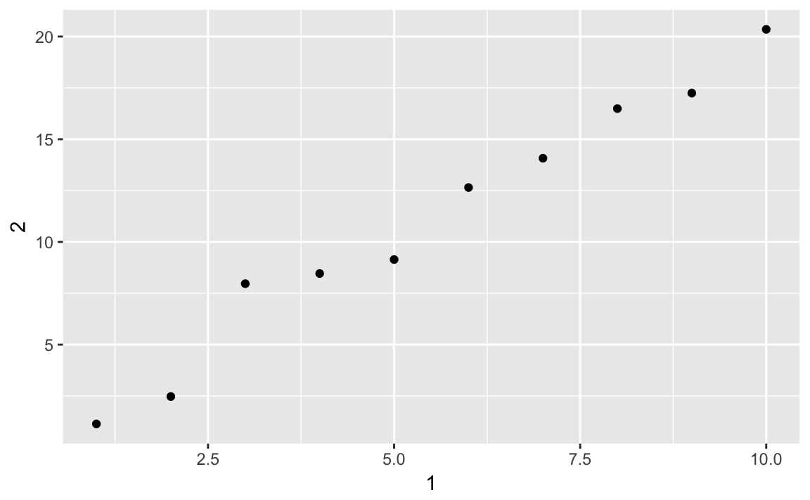

10 Tibbles
10.1 Introduction
10.2 Creating Tibbles
No exercises
10.3 Tibbles vs. data.frame
No exercises
10.4 Subsetting
No exercises
10.5 Interacting with older code
No exercises
10.6 Exercises
Exercise 10.6.1
How can you tell if an object is a tibble? (Hint: try printing mtcars, which is a regular data frame).
When we print mtcars, it prints all the columns.
mtcars
#> mpg cyl disp hp drat wt qsec vs am gear carb
#> Mazda RX4 21.0 6 160.0 110 3.90 2.62 16.5 0 1 4 4
#> Mazda RX4 Wag 21.0 6 160.0 110 3.90 2.88 17.0 0 1 4 4
#> Datsun 710 22.8 4 108.0 93 3.85 2.32 18.6 1 1 4 1
#> Hornet 4 Drive 21.4 6 258.0 110 3.08 3.21 19.4 1 0 3 1
#> Hornet Sportabout 18.7 8 360.0 175 3.15 3.44 17.0 0 0 3 2
#> Valiant 18.1 6 225.0 105 2.76 3.46 20.2 1 0 3 1
#> Duster 360 14.3 8 360.0 245 3.21 3.57 15.8 0 0 3 4
#> Merc 240D 24.4 4 146.7 62 3.69 3.19 20.0 1 0 4 2
#> Merc 230 22.8 4 140.8 95 3.92 3.15 22.9 1 0 4 2
#> Merc 280 19.2 6 167.6 123 3.92 3.44 18.3 1 0 4 4
#> Merc 280C 17.8 6 167.6 123 3.92 3.44 18.9 1 0 4 4
#> Merc 450SE 16.4 8 275.8 180 3.07 4.07 17.4 0 0 3 3
#> Merc 450SL 17.3 8 275.8 180 3.07 3.73 17.6 0 0 3 3
#> Merc 450SLC 15.2 8 275.8 180 3.07 3.78 18.0 0 0 3 3
#> Cadillac Fleetwood 10.4 8 472.0 205 2.93 5.25 18.0 0 0 3 4
#> Lincoln Continental 10.4 8 460.0 215 3.00 5.42 17.8 0 0 3 4
#> Chrysler Imperial 14.7 8 440.0 230 3.23 5.34 17.4 0 0 3 4
#> Fiat 128 32.4 4 78.7 66 4.08 2.20 19.5 1 1 4 1
#> Honda Civic 30.4 4 75.7 52 4.93 1.61 18.5 1 1 4 2
#> Toyota Corolla 33.9 4 71.1 65 4.22 1.83 19.9 1 1 4 1
#> Toyota Corona 21.5 4 120.1 97 3.70 2.46 20.0 1 0 3 1
#> Dodge Challenger 15.5 8 318.0 150 2.76 3.52 16.9 0 0 3 2
#> AMC Javelin 15.2 8 304.0 150 3.15 3.44 17.3 0 0 3 2
#> Camaro Z28 13.3 8 350.0 245 3.73 3.84 15.4 0 0 3 4
#> Pontiac Firebird 19.2 8 400.0 175 3.08 3.85 17.1 0 0 3 2
#> Fiat X1-9 27.3 4 79.0 66 4.08 1.94 18.9 1 1 4 1
#> Porsche 914-2 26.0 4 120.3 91 4.43 2.14 16.7 0 1 5 2
#> Lotus Europa 30.4 4 95.1 113 3.77 1.51 16.9 1 1 5 2
#> Ford Pantera L 15.8 8 351.0 264 4.22 3.17 14.5 0 1 5 4
#> Ferrari Dino 19.7 6 145.0 175 3.62 2.77 15.5 0 1 5 6
#> Maserati Bora 15.0 8 301.0 335 3.54 3.57 14.6 0 1 5 8
#> Volvo 142E 21.4 4 121.0 109 4.11 2.78 18.6 1 1 4 2But when we first convert mtcars to a tibble using as_tibble(), it prints on the
first ten observations. There are also some other differences in formatting
of the printed data frame.
as_tibble(mtcars)
#> # A tibble: 32 x 11
#> mpg cyl disp hp drat wt qsec vs am gear carb
#> * <dbl> <dbl> <dbl> <dbl> <dbl> <dbl> <dbl> <dbl> <dbl> <dbl> <dbl>
#> 1 21 6 160 110 3.9 2.62 16.5 0 1 4 4
#> 2 21 6 160 110 3.9 2.88 17.0 0 1 4 4
#> 3 22.8 4 108 93 3.85 2.32 18.6 1 1 4 1
#> 4 21.4 6 258 110 3.08 3.22 19.4 1 0 3 1
#> 5 18.7 8 360 175 3.15 3.44 17.0 0 0 3 2
#> 6 18.1 6 225 105 2.76 3.46 20.2 1 0 3 1
#> # ... with 26 more rowsYou can use the function is_tibble() to check whether a data frame is a tibble or not.
The mtcars data frame is not a tibble.
But the diamonds and flights data are tibbles.
is_tibble(ggplot2::diamonds)
#> [1] TRUE
is_tibble(nycflights13::flights)
#> [1] TRUE
is_tibble(as_tibble(mtcars))
#> [1] TRUEMore generally, you can use the class() function to find out the class of an
object. Tibbles has the classes c("tbl_df", "tbl", "data.frame"), while old
data frames will only have the class "data.frame".
class(mtcars)
#> [1] "data.frame"
class(ggplot2::diamonds)
#> [1] "tbl_df" "tbl" "data.frame"
class(nycflights13::flights)
#> [1] "tbl_df" "tbl" "data.frame"If you are interested in reading more on R’s classes, read the chapters on object oriented programming in Advanced R.
Exercise 10.6.2
Compare and contrast the following operations on a data.frame and equivalent tibble. What is different? Why might the default data frame behaviors cause you frustration?
df <- data.frame(abc = 1, xyz = "a")
df$x
#> [1] a
#> Levels: a
df[, "xyz"]
#> [1] a
#> Levels: a
df[, c("abc", "xyz")]
#> abc xyz
#> 1 1 atbl <- as_tibble(df)
tbl$x
#> Warning: Unknown or uninitialised column: 'x'.
#> NULL
tbl[, "xyz"]
#> # A tibble: 1 x 1
#> xyz
#> <fct>
#> 1 a
tbl[, c("abc", "xyz")]
#> # A tibble: 1 x 2
#> abc xyz
#> <dbl> <fct>
#> 1 1 aUsing $ a data.frame will partially complete the column. So even though we
wrote df$x it returned df$xyz. This saves a few keystrokes, but can result
in accidentally using a different variable than you thought you were using.
With data.frames, with [ the type of object that is returned differs on the
number of columns. If it is one column, it won’t return a data.frame, but
instead will return a vector. With more than one column, then it will return a
data.frame. This is fine if you know what you are passing in, but suppose you
did df[ , vars] where vars was a variable. Then you what that code does
depends on length(vars) and you’d have to write code to account for those
situations or risk bugs.
Exercise 10.6.3
If you have the name of a variable stored in an object, e.g. var <- "mpg", how can you extract the reference variable from a tibble?
You can use the double bracket, like df[[var]]. You cannot use the dollar sign, because df$var would look for a column named var.
Exercise 10.6.4
Practice referring to non-syntactic names in the following data frame by:
- Extracting the variable called 1.
- Plotting a scatterplot of 1 vs 2.
- Creating a new column called 3 which is 2 divided by 1.
- Renaming the columns to one, two and three.
For this example, I’ll create a dataset called annoying with
columns named 1 and 2.
To extract the variable called 1 run
or
To create a scatter plot of
1vs.2run
To add a new column
3which is2divided by1runor
To rename the columns to
one,two, andthree, runannoying <- rename(annoying, one = `1`, two = `2`, three = `3`) glimpse(annoying) #> Observations: 10 #> Variables: 3 #> $ one <int> 1, 2, 3, 4, 5, 6, 7, 8, 9, 10 #> $ two <dbl> 0.60, 4.26, 3.56, 7.99, 10.62, 13.15, 12.18, 15.75, 17.7... #> $ three <dbl> 0.60, 2.13, 1.19, 2.00, 2.12, 2.19, 1.74, 1.97, 1.97, 1.97
Exercise 10.6.5
What does tibble::enframe() do? When might you use it?
The function tibble::enframe() converts named vectors to a data frame with names and values
Exercise 10.6.6
What option controls how many additional column names are printed at the footer of a tibble?
The help page for the print() method of tibble objects is discussed in ?print.tbl_df.
The n_extra argument determines the number of extra columns to print information for.